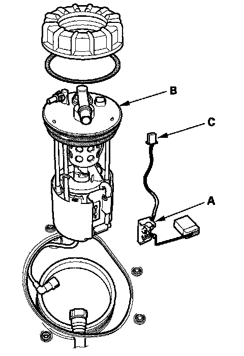

Fuel Gauge Sender: Service and Repair
Fuel Pump/Fuel Gauge Sending Unit Replacement1. Remove the fuel tank unit.

2. Remove the fuel level sensor (fuel sending unit) (A) from the fuel tank unit (B).
3. Check these items before installing the fuel tank unit:
- When connecting the wire harness, make sure the connection is secure and the connector (C) are firmly locked into place.
- When installing the fuel gauge sending unit, make sure the connection is secure and the connector is firmly locked into place. Be careful not to bend or twist it excessively.
4. Install the parts in the reverse order of removal. When installing the fuel tank unit, align the marks on the unit and the fuel tank.